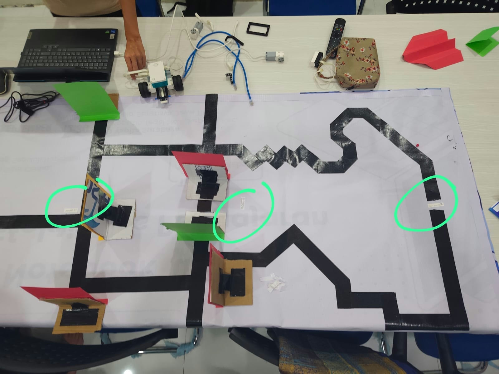

[EF234726] Robotika - Kelas T
Buku Panduan Tantangan
Robot Pengikut Garis
Line Follower
1 Oktober – 8 Oktober 2026
@Lab KCV
1 Oktober – 8 Oktober 2026
@Lab KCV
Buku panduan ini memuat ketentuan pelaksanaan dan tata cara penilaian Tantangan Robot Pengikut Garis. Seluruh peserta diwajibkan membaca dan memahami isi dokumen ini sebelum pelaksanaan tantangan.
Tantangan ini menguji kemampuan tim dalam merancang robot yang mampu:
| Checkpoint 1 — Mengikuti garis | 30% |
| Checkpoint 2 — Manuver di depan dinding | 30% |
| Checkpoint 3 — Menyelesaikan lintasan | 30% |
| Waktu tempuh | 10% |

Robot bergerak dari titik mulai dengan mengikuti garis hingga mencapai Checkpoint 1.
Robot mendeteksi dinding di depannya, mengenali warnanya, lalu berbelok sesuai aturan warna. Nilai penuh diberikan apabila robot berhasil melakukan manuver di depan sekurang-kurangnya dua dinding.
Robot melanjutkan perjalanan hingga titik akhir lintasan. Nilai sebagian diberikan apabila robot mencapai titik setengah jalan.
Setiap dinding pada lintasan diberi warna yang menentukan arah belok robot. Ketika robot mendeteksi dinding di depannya, robot wajib membaca warna dinding tersebut dan berbelok sesuai ketentuan berikut.
Robot wajib berbelok ke kiri.
Robot wajib berbelok ke kanan.
Robot boleh berbelok ke kiri atau kanan, sesuai pilihan tim.
Setiap checkpoint dinilai pada skala 0–100, kemudian dikalikan dengan bobotnya masing-masing.
| Checkpoint | Bobot | Nilai | Kriteria |
|---|---|---|---|
1. Mengikuti garis | 30% | 100 | Robot mengikuti garis dan mencapai Checkpoint 1. |
| 0 | Robot tidak berhasil mengikuti garis. | ||
2. Manuver di depan dinding | 30% | 100 | Robot berbelok sesuai warna di depan sekurang-kurangnya dua dinding dan mencapai Checkpoint 2. |
| 60 | Robot berbelok sesuai warna di depan sekurang-kurangnya dua dinding, namun tidak mencapai Checkpoint 2. | ||
| 30 | Robot berbelok sesuai warna di depan satu dinding. | ||
| 0 | Robot tidak berhasil melakukan manuver sesuai warna dinding. | ||
3. Menyelesaikan lintasan | 30% | 100 | Robot mencapai titik akhir lintasan. |
| 50 | Robot mencapai titik setengah jalan. | ||
| 0 | Robot tidak mencapai titik setengah jalan. |
Waktu tempuh diukur oleh juri sejak aba-aba mulai hingga percobaan dinyatakan selesai. Nilai waktu ditentukan berdasarkan rentang waktu penyelesaian sebagaimana tercantum pada tabel.
| Waktu penyelesaian | Nilai waktu | Kontribusi |
|---|---|---|
| ≤ 1 menit | 100 | 10 |
| > 1 – 2 menit | 90 | 9 |
| > 2 – 3 menit | 80 | 8 |
| > 3 – 4 menit | 70 | 7 |
| > 4 – 5 menit | 60 | 6 |
| > 5 – 6 menit | 50 | 5 |
| > 6 – 7 menit | 40 | 4 |
| > 7 – 8 menit | 30 | 3 |
| > 8 – 9 menit | 20 | 2 |
| > 9 – 10 menit | 10 | 1 |
| > 10 menit | 0 | 0 |
Sebuah tim berhasil mengikuti garis hingga Checkpoint 1, berbelok sesuai warna di depan dua dinding namun tidak mencapai Checkpoint 2, mencapai titik setengah jalan, dan menyelesaikan percobaan dalam 6 menit 30 detik.
Tidak dinilai. Kesempatan berlatih di lintasan untuk menguji dan melakukan tuning robot.
Dinilai. Percobaan resmi yang menentukan nilai akhir tim.
Tim menghubungi asisten melalui chat untuk mengajukan jadwal trial atau demonstrasi.
Tim menyampaikan nama tim, jenis pengajuan (trial/demonstrasi), serta usulan tanggal dan waktu.
Tim menunggu konfirmasi jadwal dari asisten.
Tim hadir di Lab KCV sesuai jadwal yang telah dikonfirmasi.
Pengajuan trial maupun demonstrasi tidak dapat dilakukan pada hari yang sama dengan hari pelaksanaan. Pengajuan paling lambat dilakukan satu hari sebelumnya.
Selamat berkompetisi. Semoga sukses!